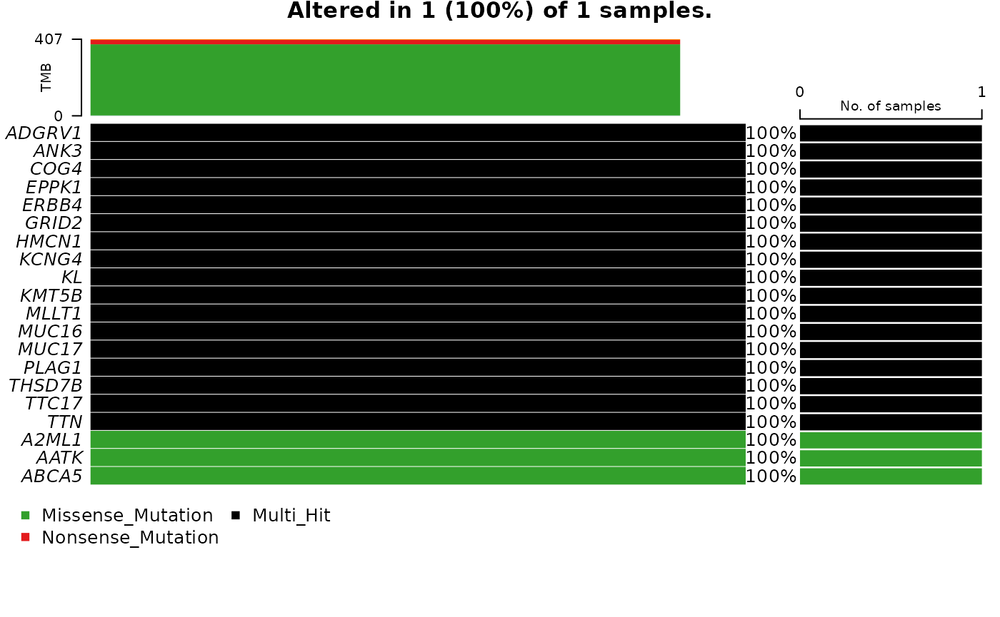

Working with simple somatic mutations
Sean Davis
Thursday, April 28, 2022
Source:vignettes/somatic_mutations.Rmd
somatic_mutations.RmdWorkflow
Genes and gene details
grep_fields('genes', 'symbol')## [1] "symbol"
head(available_values('genes','symbol'))## [1] "y_rna" "ccdc39" "matr3" "a1bg" "a1cf" "a2m"ssms
ssms() %>%
GenomicDataCommons::filter(
chromosome==paste0('chr',tp53$gene_chromosome[1]) &
start_position > tp53$gene_start[1] &
end_position < tp53$gene_end[1]) %>%
GenomicDataCommons::count()## [1] 1290
ssms() %>%
GenomicDataCommons::filter(
consequence.transcript.gene.symbol %in% c('TP53')) %>%
GenomicDataCommons::count()## [1] 1288convert to VRanges
library(VariantAnnotation)
vars = ssms() %>%
GenomicDataCommons::filter(
consequence.transcript.gene.symbol %in% c('TP53')) %>%
GenomicDataCommons::results_all() %>%
as_tibble()
vr = VRanges(seqnames = vars$chromosome,
ranges = IRanges(start=vars$start_position, width=1),
ref = vars$reference_allele,
alt = vars$tumor_allele)
ssm_occurrences() %>%
GenomicDataCommons::filter(
ssm.consequence.transcript.gene.symbol %in% c('TP53')) %>%
GenomicDataCommons::count()## [1] 5030
var_samples = ssm_occurrences() %>%
GenomicDataCommons::filter(
ssm.consequence.transcript.gene.symbol %in% c('TP53')) %>%
GenomicDataCommons::expand(c('case', 'ssm', 'case.project')) %>%
GenomicDataCommons::results_all() %>%
as_tibble()
table(var_samples$case$disease_type)##
## Acinar Cell Neoplasms
## 7
## Adenomas and Adenocarcinomas
## 1467
## Adnexal and Skin Appendage Neoplasms
## 1
## Complex Epithelial Neoplasms
## 16
## Complex Mixed and Stromal Neoplasms
## 69
## Cystic, Mucinous and Serous Neoplasms
## 630
## Ductal and Lobular Neoplasms
## 616
## Epithelial Neoplasms, NOS
## 9
## Fibromatous Neoplasms
## 12
## Germ Cell Neoplasms
## 1
## Gliomas
## 483
## Lipomatous Neoplasms
## 6
## Lymphoid Leukemias
## 2
## Mature B-Cell Lymphomas
## 5
## Mesothelial Neoplasms
## 11
## Miscellaneous Bone Tumors
## 1
## Myeloid Leukemias
## 10
## Myomatous Neoplasms
## 59
## Nerve Sheath Tumors
## 1
## Nevi and Melanomas
## 85
## Not Reported
## 9
## Plasma Cell Tumors
## 60
## Soft Tissue Tumors and Sarcomas, NOS
## 32
## Squamous Cell Neoplasms
## 1208
## Thymic Epithelial Neoplasms
## 4
## Transitional Cell Papillomas and Carcinomas
## 226OncoPrint
fnames <- files() %>%
GenomicDataCommons::filter(
cases.project.project_id=='TCGA-SKCM' &
data_format=='maf' &
data_type=='Masked Somatic Mutation' &
analysis.workflow_type ==
'Aliquot Ensemble Somatic Variant Merging and Masking'
) %>%
results(size = 6) %>%
ids() %>%
gdcdata()## -Reading
## -Validating
## -Silent variants: 200
## -Summarizing
## -Processing clinical data
## --Missing clinical data
## -Finished in 0.282s elapsed (0.277s cpu)
maftools::oncoplot(melanoma)## Warning in min(x): no non-missing arguments to min; returning Inf## Warning in max(x): no non-missing arguments to max; returning -Inf